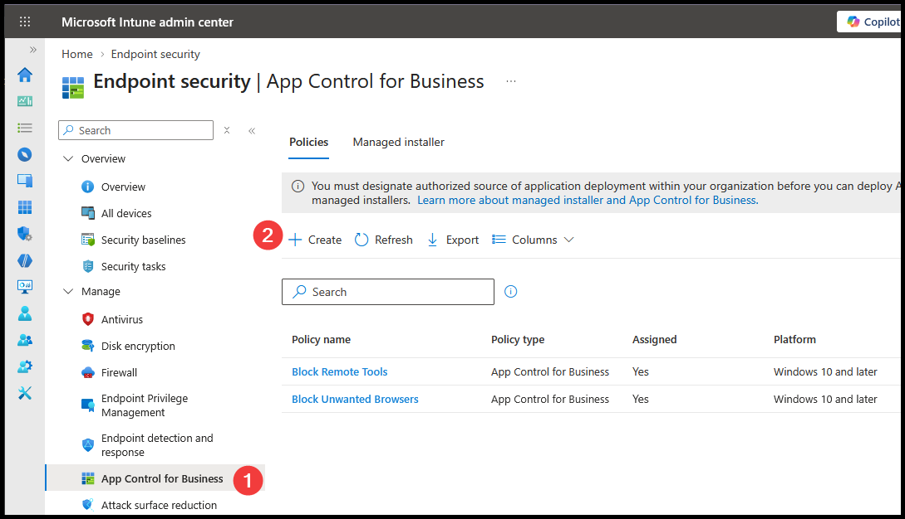
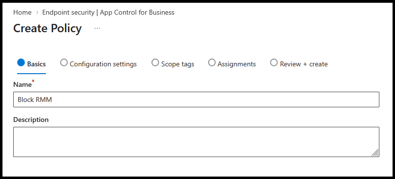
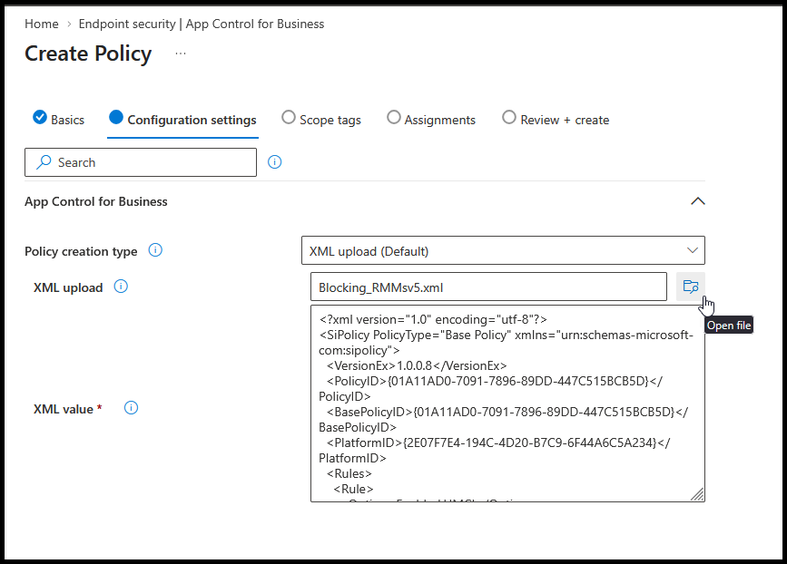
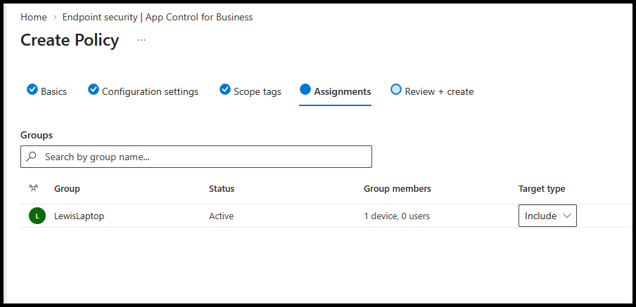

Deploy WDAC
Creates an XML policy that blocks the remote tools you have not excluded.
Exclude trusted tools, then download XML.
1. Create
Intune → Endpoint security → App Control for Business → Create.

2. Name
Name the policy. Select Next.

3. Upload
Choose XML upload (Default). Upload your downloaded XML.

4. Assign
Set scope tags if needed. Assign your pilot device group.
Review + create → Create.

5. Verify
- Allow the policy to sync to the pilot device.
- Test excluded and blocked tools.
Expand assignments after testing.